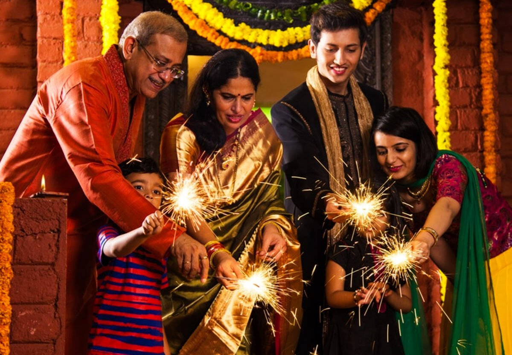
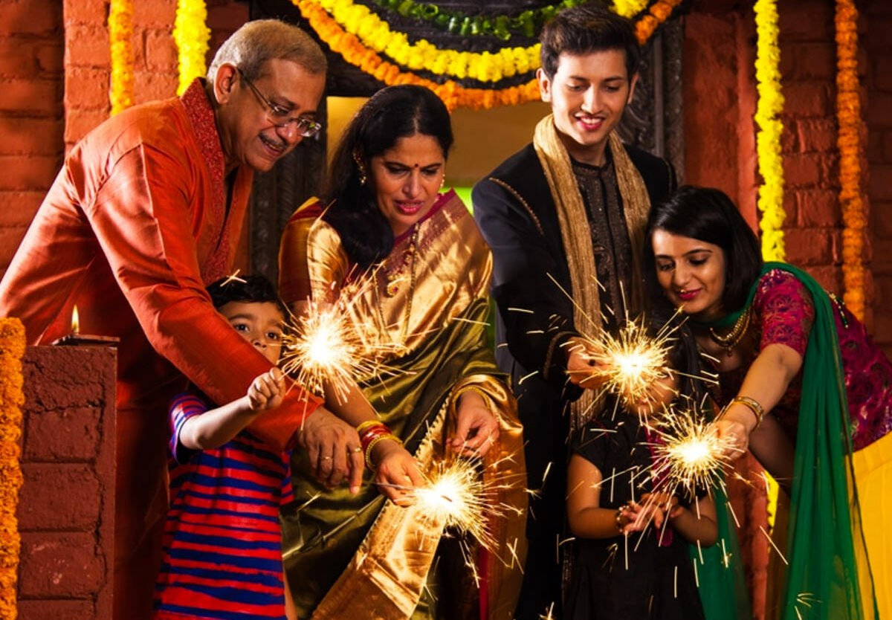
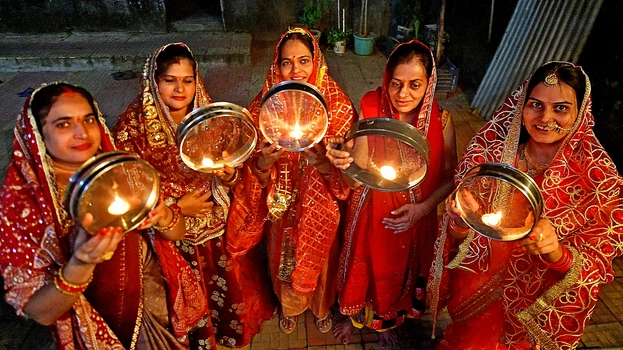
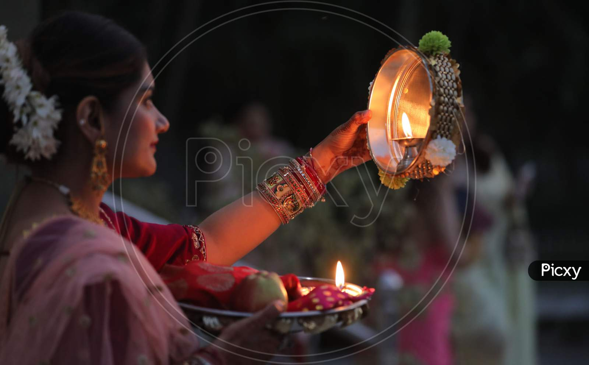

About Bihar festivals
"Bihar is a land of festivals and traditions.
The people of Bihar celebrate festivals like Chhath Puja,
Holi, Diwali, and Eid with great enthusiasm. Chhath Puja is
the most unique festival of Bihar, where people worship the Sun God.
These festivals bring families and communities together and
reflect the cultural richness of the state. Traditional food,
music, and customs make the celebrations even more beautiful."
Chhath Puja

Chhath Puja is one of the most sacred and important
festivals of Bihar.
It is dedicated to the worship of the Sun God (Surya
Dev) and Chhathi Maiya.
The festival lasts for four days and is celebrated with
great purity,
devotion, and discipline. People offer prayers to the
setting and rising
sun at riverbanks or ponds, asking for the well-being
and happiness of their
families. Women observe strict fasts, often without
water, which shows their
deep faith and dedication. Traditional items like
thekua, soop, and dhoop
are used during the rituals, and devotional songs are
sung. Chhath Puja
teaches us to be thankful to nature, family, and the
divine for giving us
life and light.
Diwali
 


Diwali is celebrated in Bihar with great joy, devotion, and cultural beauty.
People clean and decorate their homes with lights, rangoli, and diyas.
In Bihar, Diwali is not just a festival — it's an emotion that brings
families and neighbors together. On this day, people worship Goddess Lakshmi
and Lord Ganesha for prosperity and happiness. Special sweets are made at home,
and children enjoy bursting crackers. In villages and towns, the markets are
full of lights, colors, and festive cheer. The tradition of lighting earthen
lamps in every corner of the house fills the night with beauty and peace.
For many, Diwali is also a time to remember their roots, respect elders, and
spread love. In Bihar, Diwali is more than a celebration — it's a bond of
tradition, unity, and light.
Holi

In Bihar, Holi is celebrated with great excitement and enthusiasm.
A day before Holi, people perform Holika Dahan, which symbolizes the end
of evil and the victory of good. On the next day, everyone plays with colors,
throws gulal, and enjoys music and dance. During Holi in Bihar, the air is
filled
with the sound of traditional Phagua folk songs, dholak, and manjeera.
Delicious sweets like gujiya, malpua, and dahi-bada are made in every home.
People sing, dance, celebrate together, and forget old differences. In Bihar,
Holi is not just a festival, it is a colorful celebration that brings hearts
together and spreads joy all around.
Durga Puja
Durga Puja is one of the most important and beautiful festivals celebrated in
Bihar and across India. It is a festival that celebrates the victory of Goddess
Durga over the demon Mahishasura, symbolizing the triumph of good over evil.
In Bihar, grand pandals are set up with beautifully decorated idols of Maa Durga.
People wear new clothes, visit pandals, and enjoy traditional music, dance,
and food. The atmosphere is full of devotion and joy. During the nine days
of Navratri, people worship different forms of the goddess, and on the tenth
day, Vijayadashami (Dussehra) is celebrated by burning the effigy of Ravana.
Durga Puja brings people together and fills their hearts with faith, energy,
and happiness. It reminds us to always choose truth, courage, and goodness
in life.
Raksha Bandhan
The bond between a brother and sister is one of the most pure and beautiful
relationships in the world. A sister always prays for her brother's
happiness and safety, while a brother promises to protect his sister
from all difficulties. Raksha Bandhan is the festival that celebrates
this precious relationship. On this day, the sister ties a rakhi on her
brother's wrist and prays for his long life and success, and the brother
promises to always love and protect her. Even if there are small fights,
the love between a brother and sister never fades. This festival reminds
us that in every relationship, the most important things are love, care, and trust.
Sankranti

Makar Sankranti is a popular and holy festival celebrated every year on 14th January.
It marks the transition of the Sun into the zodiac sign of Capricorn (Makar),
which is considered very auspicious. In Bihar, people celebrate this day by
eating tilkut, chura-dahi (flattened rice with curd), and jaggery (gur).
Homes are cleaned, people wear new clothes, and greet each other with joy
and blessings. In many places, people also enjoy flying kites. This festival
teaches us to welcome new beginnings, stay connected with nature, and share
happiness with our family and community. Makar Sankranti reminds us that just
like the Sun, we too should rise and shine with positivity.
Saraswati Puja
Saraswati Puja is a festival dedicated to Goddess Saraswati,
the goddess of knowledge, wisdom, music, and learning. It is mostly
celebrated by students and teachers in schools and homes, especially in states
like Bihar, West Bengal, and Odisha. On this day, people wear yellow clothes,
decorate the idol of Maa Saraswati with flowers, and offer prasad like boondi
and fruits. Students place their books and pens near the idol and pray for
success in studies. Cultural programs, art competitions, and songs are also
organized in schools and communities. Saraswati Puja is not just a religious
event but a celebration of learning and the light of knowledge.
Karwa chauth
 
Karwa Chauth is widely celebrated in Bihar, especially in urban areas like Patna,
Muzaffarpur, and Gaya. People celebrate this festival with grandeur and tradition.
Homes are decorated with rangoli, diyas, and lights, creating a festive atmosphere.
Women gather together, share the rituals, and celebrate the love and devotion they
have for their husbands. It's a day of fasting, prayers, and socializing with family
and friends.This festival is not just about fasting, but it also highlights
the deep connection, trust, and devotion between husband and wife.
Karwa Chauth has become an integral part of Bihar's cultural heritage,
promoting love, faith, and togetherness. The festival continues to grow
in popularity and significance, especially among younger generations in Bihar.
Teej Puja

Teej Puja is a significant Hindu festival primarily observed by married women for
the well-being, prosperity, and long life of their husbands, and by unmarried girls
seeking an ideal life partner. Celebrated mainly in North and Central India as well
as Nepal, it includes different variations such as Hariyali Teej, Kajari Teej, and
the most important one, Hartalika Teej. According to legend, Goddess Parvati observed
intense penance to be united with Lord Shiva, and Hartalika Teej commemorates that
devotion. On this day, women observe a strict fast (Nirjala Vrat) without food or
water and perform rituals in honor of Lord Shiva and Goddess Parvati.
They dress in traditional attire, apply henna, adorn themselves with solah
shringar (sixteen adornments), and gather to recite the Teej Vrat Katha.
Devotional songs are sung throughout the night in a practice called Jagran.
The fast is broken the next morning after sunrise. Symbolizing purity, love, and
spiritual strength, Teej Puja is not only a religious observance but also a celebration
of feminine devotion and cultural tradition.
Janmashtami
Janmashtami is a sacred Hindu festival that celebrates the birth of Lord Krishna,
the eighth incarnation of Lord Vishnu. It is observed on the eighth day (Ashtami)
of the Krishna Paksha in the month of Bhadrapada (August-September).
Devotees observe fasts, sing devotional songs, and stay up until midnight,
the believed time of Krishna's birth. Temples are beautifully decorated,
dramatic performances (called Krishna Leelas) are held, and in many places,
people organize the exciting Dahi Handi event, where teams form human pyramids
to break a pot of curd hung high above, symbolizing Krishna's playful nature.
Janmashtami is not just a religious festival but also a celebration of love,
devotion, truth, and righteousness. On this day, people reflect on Krishna's
teachings in the Bhagavad Gita and try to live by the values of compassion, humility,and
faith.
Maha Shivratri
Maha Shivratri is one of the most important and sacred festivals dedicated to Lord
Shiva,
the destroyer and transformer among the Hindu Trinity (Brahma, Vishnu, Mahesh).
It is celebrated annually on the 14th night of the dark fortnight (Krishna Paksha)
in the month of Phalguna (February-March). Devotees observe strict fasts, visit Shiva
temples, and offer milk, water, bel leaves, and dhatura to the Shiva Lingam.
The night is spent in chanting "Om Namah Shivaya", singing bhajans, and performing
Jagran (night-long vigil). According to Hindu mythology, this is the night when Lord
Shiva performed the Tandava dance, and it is also believed to be the night of his
divine marriage to Goddess Parvati. Maha Shivratri symbolizes the victory of
devotion over darkness and ignorance, and inspires people to lead a life of purity,
discipline, and truth. It is a night of deep spiritual reflection, inner peace,
and connection with the divine.
Ram Navami
Ram Navami is a sacred Hindu festival that celebrates the birth of Lord Rama, the
seventh incarnation of Lord Vishnu and the hero of the epic Ramayana. It is observed
on the ninth day (Navami) of Chaitra month (March-April), which also marks the end of
Chaitra Navratri. On this day, devotees worship Lord Rama with great devotion,
recite Ramayana, sing bhajans, and participate in Rama Katha and processions known
as Shobha Yatra, where idols of Rama, Sita, Lakshman, and Hanuman are carried in
beautifully decorated chariots. Many devotees observe fasts and visit temples,
especially in Ayodhya, the birthplace of Lord Rama. Ram Navami reminds us of the
ideals of truth, duty, courage, and compassion, which Lord Rama stood for. It is
not just a celebration of a divine birth but a call to live a life of righteousness
(dharma) and moral integrity.
Eid al-Adha


Eid is one of the most important and joyous festivals celebrated by Muslims
around the world. There are two major Eids in Islam: Eid al-Fitr and Eid al-Adha.
Eid al-Fitr marks the end of the holy month of Ramadan, during which Muslims fast
from dawn to sunset as a form of spiritual cleansing and devotion. On Eid al-Fitr,
Muslims perform a special prayer in congregation, give Zakat al-Fitr (charity to the
needy),
and celebrate with feasts, new clothes, sweets, and social gatherings. The second, Eid
al-Adha,
commemorates the willingness of Prophet Ibrahim (Abraham) to sacrifice his son in
obedience to God.
It involves the ritual Qurbani (sacrifice of an animal), and the meat is shared among
family, friends,
and the
poor.
Both Eids emphasize themes of gratitude, compassion, charity, and unity. They are times
of joy,
reflection,
and strengthening bonds within families and communities. Eid is not only a religious
observance
but also a vibrant expression of cultural and spiritual identity.